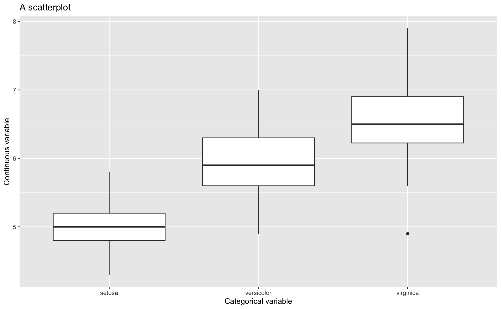

Data Visualisation with ggplot2
Communicating your data
Daniela Palleschi
Humboldt-Universität zu Berlin
2024-06-03
Learning objectives
- visualise variable distributions
- visualise summary statistics
- save figures as
rdsor as figures
Load packages and data
# load data
df_lifetime <- readr::read_csv(here::here("data/tidy_data_lifetime_pilot.csv"),
# for special characters
locale = readr::locale(encoding = "latin1")
) |>
mutate_if(is.character,as.factor) |> # all character variables as factor
filter(type == "critical", # only critical trials
px != "px3") # this participant had lots of 0's for some reasonSummary of first-fixation times
- this code is from the previous topic
# compute summary
summary_ff <- df_lifetime |>
filter(region=="verb") |>
group_by(condition, lifetime, tense) %>%
summarise(N = n(),
mean.ff = mean(ff, na.rm = T),
sd = sd(ff, na.rm = T)) %>%
# compute standard error, confidence intervals, and lower/upper ci bounds
mutate(se = sd / sqrt(N),
ci = qt(1 - (0.05 / 2), N - 1) * se,
lower.ci = mean.ff - qt(1 - (0.05 / 2), N - 1) * se,
upper.ci = mean.ff + qt(1 - (0.05 / 2), N - 1) * se) |>
ungroup()Plotting reading times
- reading times are (usually) continuous variables
- as are e.g., reaction times
- they are truncated at 0, meaning they cannot have negative values
- because of this, they tend to have a skewed distribution
Plots with ggplot2
ggplot2is part of the tidyverse (likedplyr)- uses a layered grammar of graphics
- i.e., we build layers
An example: histogram
Start layering
Add labels
Add
Add condition
Customisation
- we can add arguments to our geoms
- e.g., transparency:
alpha =takes a value between 0 to 1
- e.g., transparency:
- we can use
theme()to customise font sizes, legend placement, etc. - tehre are also popular preset themes, such as
theme_bw()andtheme_minimal()
Distributions
- show the distribution of observations
- so we can see where the data are clustered
- and eyeball the shape of the distribution
- we already saw the histogram, which shows the number of observations per variable value
- density plots are another useful plot for visualising distributions
Density plots
- below I just replaced
geom_histogram()withgeom_density()- I also filtered the data to include only values of
ffabove 0
- I also filtered the data to include only values of
- what is plotted along the y-axis? how does this differ from a histogram?
Grouped density plots
- just like with histograms, we can look at the density plots of different subsets of the data with
aes(fill = )- like region
facet_grid()
- there are a lot of overlapping density curves, let’s try to separate them with
facet_grid(x~y)
- how would you describe the density plots of the different regions?
re-ordering factors
- by default, factors will be ordered alphabetically
- but we don’t always want that
- here,
verb-1should be beforeverb
Exercise
- create a density plot with the fill colour set to
condition, but:
- subset the data to only include the verb region
- you can decide if you want to use facets or to have the density curves overlayed
- your plot should look something like A or B:
Extra exercise
- Can you produce these plots?
Scatterplots
- histograms and density plots plot a single variable along the x-axis
- in most other plots the dependent (measure) variable is plotted along the y-axis by convention
- scatterplots plot the relationship between two variables
Scatterplots
- the figure below plots total reading times (verb region) to the verb region (x-axis) and reaction times to the critical sentence (y-axis)
- what does each point represent?
- how would you describe the relationship between the two variables?
Exercise
- Generate a scatterplot of total reading times and reaction times, with:
- colour and shape set to condition
- tip: these both belong in
aes()
- What information does this plot suggest?
Bar plot
- show the distribution of categorical factor levels
- i.e., the frequency of observations per level
- be sure to read in
acceptas a factor!
Grouped bar plots
Exercise
- Generate a grouped bar plot (i.e.,
dodge) with:- a facet grid for
tense - plots
lifetimeon the x-axis - and fills the bars based on
accept - change the labels accordingly
- customise as you like
- a facet grid for
Grouped bar plots

Stacked bar plots
Exercise
- Choose the barplot you like best for binary data
- Reproduce that barplot, but with
reg_inat theverb1region
Extra exercise
- Create another bar plot, but for
reg_outfor all sentence regions - Use
facet_grid()
- to have facets by region (columns) and by tense (in 2 rows)
Summary statistics
- measures of location: mean, median, mode
- measures of spread: (interquartile) range, standard deviation
Boxplots
- boxplots provide information about the distribution of a continuous variable
- but includes information like median (dark line) and quartiles (box and whiskers)
- and outliers (dots)
- like scatterplots, require x and y variables
- but one of them needs to be categorical

Boxplot explained
Image source: Winter (2019) (all rights reserved)
Boxplots
- let’s change our scatterplot to a boxplot
Grouped boxplots
Exercise
- Create a group boxplot (x = tense, fill = lifetime) for
- first-pass reading time (verb region)
- regression path duration (verb region)
- total reading time (verb region)
- reaction times (use the
distinct()verb to have a single observation per participant and per trial)
Interaction plots
- common for factorial designs, i.e., comparing categorical predictors
- there are 2 ways of producing them:
- with your data frame and
stat_summary() - or with a summary table and ggplot geoms
geom_point(),geom_errorbar(), andgeom_line()
- with your data frame and
- we’ll need our summary table to plot an interaction plot
| condition | lifetime | tense | N | mean.ff | sd | se | ci | lower.ci | upper.ci |
|---|---|---|---|---|---|---|---|---|---|
| deadPP | dead | PP | 140 | 198.9 | 57.9 | 4.9 | 9.7 | 189.2 | 208.6 |
| deadSF | dead | SF | 139 | 194.6 | 67.9 | 5.8 | 11.4 | 183.2 | 205.9 |
| livingPP | living | PP | 140 | 194.2 | 77.3 | 6.5 | 12.9 | 181.3 | 207.1 |
| livingSF | living | SF | 140 | 186.0 | 57.6 | 4.9 | 9.6 | 176.4 | 195.6 |
Code
library(patchwork)
df_lifetime |>
filter(region == "verb") |>
ggplot(aes(x = lifetime, y = ff,
shape = tense,
group = tense,
color = tense)) +
labs(title="Interaction plot (`stat_summary()`)",
x = "Lifetime",
y = "First fix (ms)",
shape = "Tense", group = "Tense", color = "Tense", linetype = "Tense") +
stat_summary(fun = "mean", geom = "point", size = 3, position = position_dodge(0.2)) +
stat_summary(fun = "mean", geom = "line", position = position_dodge(0.2), aes(linetype=tense)) +
stat_summary(fun.data = "mean_cl_normal", geom = "errorbar", width = .2
, position = position_dodge(0.2)) +
theme_bw() +
summary_ff |>
ggplot(aes(x = lifetime, y = mean.ff,
shape = tense,
group = tense,
color = tense)) +
labs(title="Interaction plot (geoms)",
x = "Lifetime",
y = "First fix (ms)",
shape = "Tense", group = "Tense", color = "Tense", linetype = "Tense") +
geom_point(size = 3,
position = position_dodge(0.2)) +
geom_line(aes(linetype=tense), position = position_dodge(0.2)) +
geom_errorbar(aes(ymin = mean.ff - ci,
ymax = mean.ff + ci),
width = .2,
position = position_dodge(0.2)) +
theme_bw() +
plot_annotation(tag_levels = "A") +
plot_layout(guides = "collect") &
theme(legend.position = "bottom")ggplot() and using stat_summary() (A) or feeding a summary table into ggplot() and using geoms (B)
Question: Binomial data
- binomial data are those with 2 categories, for example
- present, absent
- yes, no
- in our dataset, each trial ended with a binary naturalness judgement task
- how might we plot such data?
Saving our plots
- we can save our plots two ways:
- as image files (e.g., JPEG, PNG, SVG, etc.): when writing in Word, LaTeX, etc.
- as a single R object (Rds: R data structure): when writing in Rmarkdown/Quarto
ggsave()
- the
ggsave()function is useful for saving ggplot objects- we first have to save one of our figures as an object
- I usually save ggplot objects with the prefix
fig_(short for figure)
- make sure you also have a useful place to store these figures
- e.g., a folder called
figures
- e.g., a folder called
Code
fig_lifetime_ff <-
summary_ff |>
ggplot(aes(x = lifetime, y = mean.ff,
shape = tense,
group = tense,
color = tense)) +
labs(title="Mean first-fixation times (verb region) with 95% CIs",
x = "Lifetime",
y = "First fix (ms)",
shape = "Tense", group = "Tense", color = "Tense", linetype = "Tense") +
geom_point(size = 3,
position = position_dodge(0.2)) +
geom_line(aes(linetype=tense), position = position_dodge(0.2)) +
geom_errorbar(aes(ymin = mean.ff - ci,
ymax = mean.ff + ci),
width = .2,
position = position_dodge(0.2)) +
theme_bw()ggsave()has lots of arguments to control width, height, resolution, etc.- to see more, run
?ggsavein the Console
- to see more, run
- you can also save as JPG/JPEG, SVG, even PDF by just changing the filename extension
saveRDS()
- we can also save the figure as R code
- which means we can control the width, height, resolution, etc. later on when we load it in
- useful if you’ll be writing up your results in R markdown or Quarto
readRDS()
- you can’t click on the file to view the figure because it’s R code
- you’d need to load the data into R again
Naming files and saving code
You’ll notice I saved the PNG and RDS files using the same name that the I used for the figure in my script. This is an important point: I want to be able to traceback my figures from the code so I can easily track them. It also helps encourage informative object and file names.
Of course, saving the code used to save the files in our scripts is also useful because we can easily adjust the saved files (e.g., change figure width or height)
References
Nordmann, E., & DeBruine, L. (2022). Applied data skills. Zenodo. https://doi.org/10.5281/zenodo.6365078
Nordmann, E., McAleer, P., Toivo, W., Paterson, H., & DeBruine, L. M. (2022). Data Visualization Using R for Researchers Who Do Not Use R. Advances in Methods and Practices in Psychological Science, 5(2), 251524592210746. https://doi.org/10.1177/25152459221074654
Wickham, H., Çetinkaya-Rundel, M., & Grolemund, G. (2023). R for Data Science (2nd ed.).
Winter, B. (2019). Statistics for Linguists: An Introduction Using R. In Statistics for Linguists: An Introduction Using R. Routledge. https://doi.org/10.4324/9781315165547
Data Visualisation